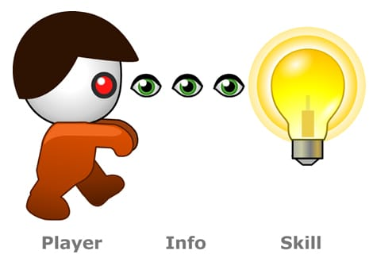

Game Loops and MDA
“A game is a system in which players engage in an artificial conflict, defined by rules, that results in a quantifiable outcome.”
— Katie Salen & Eric Zimmerman, Rules of Play (2003)
“Play is a way of operating a constrained system in a gratifying way. This general act can apply to anything whatsoever — soccer and Tetris, sure, but also yard work and parenting, errands and marriage.”
— Ian Bogost, Play Anything (2016)
“Before directors wish to convey ideas or moods, evoke emotions or themes, transmit ideologies or cultural values, they must take care of some mundane business.”
— David Bordwell
“Formalism is the view that the essential nature of a game is its rule-set, and that proper play involves obeying the rules.”
— C. Thi Nguyen, Philosophy of Games (2017)

“Mechanics are the various actions, behaviors and control mechanisms afforded to the player within a game context.”
— Robin Hunicke, Marc LeBlanc, Robert Zubek, MDA: A Formal Approach to Game Design and Game Research
“Dynamics describes the run-time behavior of the mechanics acting on player inputs and each others’ outputs over time.”
— Robin Hunicke, Marc LeBlanc, Robert Zubek, MDA: A Formal Approach to Game Design and Game Research
“Aesthetics describes the desirable emotional responses evoked in the player, when she interacts with the game system.”
— Robin Hunicke, Marc LeBlanc, Robert Zubek, MDA: A Formal Approach to Game Design and Game Research